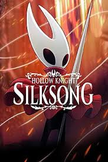
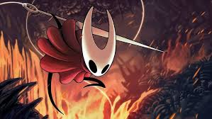

Mais um ano se passa e junto com ele vieram jogos que fizeram os olhos dos gamers brilharem e outros que frustaram as expectativas. Em 2025, alguns títulos novos desenvolveram ainda mais o universo dos jogos e agradaram as expectativas de quem espera com ânsia o lançamento, um dos títulos que se encaixam nesse quesito é o Hollow Knight:Silksong, desenvolvido pela Team Cherry. Mas, em contrapartida, alguns nomes foram duramente criticados, por exemplo o jogo MindsEye, da Build A Rocket Boy, sendo considerado por uma grande maioria como o pior jogo do ano (o negócio tá feio pro lado deles). Nesta primeira parte do site, veremos com você, leitor, uma análise geral de alguns jogos - não apenas os citados acima, mas também outros títulos que foram comentados pelos jogadores - seja de forma positiva ou negativa.
O jogo Clair Obscur: Expedition 33 gira em torno de um evento chamado Gommage, onde uma entidade apaga pessoas de uma certa idade do mundo anualmente, entidade essa cujo nome é Artífice (Pintora), uma pintora chamada Aline Dessendre que se refugia na Tela (o mundo onde o jogo se passa) criada pelo seu falecido irmão após salvá-la de um incêndio causado por seus inimigos — um grupo rival chamado de “Escritores”- e para deixá-lo "eternizado" fez uma representação dele, chamado Verso Dessendre. Para detê-la, a Expedição 33, um grupo de voluntários, foi convocado para este trabalho, nele temos os personagens: Gustave (o engenheiro), Maelle (a irmã adotiva de Gustave), Lune (a maga) e Sciel (a guerreira) Mas, em meio a esse trama, se revela uma complexa metalinguagem sobre luto, criação artística e a verdade por trás do mundo pintado onde vivem, com a "Pintora" sendo uma criação de uma artista lidando com a perda de seu irmão.
Numa avaliação geral, a lore do jogo tem relatos e notas positivas,pela profundidade narrativa, pelas metáforas e pela forma como os relacionamentos entre os personagens são desenvolvidos, as conversas que eles têm entre si também é um dos pontos altos do jogo. Em questão de gráficos, eles até que são bem elogiados por uma grande parcela do público, onde criam um visual bonito e memorável com designs coloridos, mas ainda assim há algumas críticas neste ponto,como o desempenho e resolução em algumas plataformas, com quedas de frame em cutscenes e um certo borrão/resolução baixa no PS5 base, conforme alguns relatos de jogadores. Clair Obscur: Expedition 33 se tornou o jogo com a maior pontuação de usuários da história no Metacritic, chegando a 9.8 no PC e 9.7 nos consoles, com milhares de avaliações. Contudo, mesmo com os mais elogios e pontos fortes, o game ainda sim tem algumas críticas, como:
🔹Problemas Técnicos e Visuais: Os jogadores notaram a falta de polimento, com problemas como personagens "clipando" através de objetos, animações de pulo rígidas, transições de personagens sem animação, e paredes invisíveis em locais estranhos, o que quebra a imersão. Cenas pré-renderizadas de baixa qualidade e com baixa taxa de quadros também foram mencionadas como decepcionantes;
🔹Combate Repetitivo e Desafiador: Embora alguns elogiem o sistema de combate, outros o consideram repetitivo e chato, especialmente o sistema de esquiva/aparar, que exige precisão de ritmo semelhante a jogos estilo Sekiro, o que pode ser frustrante e tedioso para alguns, levando a sugestões de opções de "aparar automático";
🔹Ritmo Lento Inicial: Alguns jogadores relataram que as primeiras horas do jogo são lentas e monótonas, o que quase os fez desistir de jogar logo no início.
No geral, Clair Obscur: Expedition 33 se destaca pela narrativa e abordagem artística, mesmo com problemas técnicos que comprometem parte da experiência. Para jogadores que valorizam história e estética, é uma recomendação cautelosamente positiva; para quem busca jogabilidade polida, talvez seja melhor esperar por atualizações.
Um dos jogos mais falados e jogados por streamers, Hollow Knight: Silksong, a épica continuação do jogo Hollow Knight, gerou um engajamento massivo devido à espera de mais de seis anos, tornando-se o jogo mais desejado do Steam antes do lançamento e quebrando recordes de audiência em plataformas como o YouTube Gaming. Desenvolvido pela Team Cherry, a hitória começa com Hornet, que é sequestrada de Hallownest e levada para um reino desconhecido chamado Pharloom, dominado por seda e música, onde ela deve ascender para escapar e desvendar mistérios sobre seu próprio passado e a história das tecelãs (Weavers), enfrentando uma nova ameaça, a Grand Mother Silk (Avó Seda) e seus asseclas da Cidadela, que buscam controlar o reino. A jornada de Hornet envolve escalar a fortaleza da Cidadela, enfrentar os "Juízes do Conhecimento" e lutar contra o regente de Pharloom, enquanto descobre a verdade sobre sua linhagem e a dominação da Avó Seda.
Na plataforma da Steam, 97% das 58,507 das análises dos úsuarios mais recentes mostram que são extremamente positivas, onde os pontos fortes do jogo que os gamers comentam são: 🔹A jogabilidade aprimorada e fluida da Hornet; 🔹O design de mapa expansivo e vertical; 🔹A trilha sonora e direção de arte impecáveis; 🔹E a dificuldade desafiadora e recompensadora;   Embora alguns achem o jogo excessivamente difícil (o que gerou até a busca por mods para facilitar), muitos fãs do gênero metroidvania e souls-like apreciam o desafio elevado. Essa nova dificuldade exige que os jogadores aprendam os padrões dos inimigos e dominem os controles. O jogo envolve o jogador com mais rápidez, com tutoriais mais curtos e ação mais imediata, proporcionando uma sensação de recompensa veloz em comparação com o seu predecessor. Por mais que pra alguns Hollow Knight: Silksong seja o game de ouro do ano, nem tudo são mar de rosas e ele tem seus pontos baixos assim como qualquer outro jogo. Como foi dito, nessa sequência a dificuldade nas batalhas aumentou, uma parte dos jogadores adoraram esse desafio que a Team Cherry trouxe, mas outros não gostaram muito dessa mecânica,muitos joadores consideram Silksong significativamente mais difícil que seu predecessor, Hollow Knight Isso se deve a inimigos mais complexos, menos quadros de invencibilidade (i-frames) após levar dano e vários inimigos causando dois pontos de dano por golpe.Outro ponto que é uma frustração comum é a distância que o jogador precisa percorrer de volta aos chefes após morrer, devido ao posicionamento das bancadas (benches, que servem como pontos de controle) que também é criticada. Além disso, críticos argumentam que a combinação de dificuldade punitiva e longos runbacks desrespeita o tempo do jogador, tornando a experiência cansativa em vez de gratificante. Numa visão geral, Hollow Knight: Silksong é aclamado entre a comunidade gamer como uma obra-prima, mantendo a excelência artística e sonora de seu antecessor, com uma jogabilidade refinada e desafiadora centrada na ágil protagonista Hornet, embora sua dificuldade extrema e ritmo, especialmente no final, possam frustrar alguns, mas a recompensa e o detalhe compensam, consolidando-o como um forte candidato a Jogo do Ano e um marco nos Metroidvanias Death Stranding 2 Por fim, vamos fala sobre Death Stranding 2 lançado oficialmente em 26 de junho de 2025, sendo exclusivo para PlayStation 5 (PS5) no lançamento, com acesso antecipado para edições especiais a partir de 24 de junho de 2025. Desenvolvido por Hideo Kojima e seu estúdio, a Kojima Productions, a história de Death Stranding 2: On the Beach se passa após os eventos do primeiro jogo - Death Stranding - e acompanha o retorno de Sam Porter Bridges em um mundo que continua lidando com as consequências da reconexão da humanidade. A história aprofunda o conceito da “Praia” e explora novos caminhos para a Rede Chiral, com Fragile desempenhando um papel central na narrativa. O game aborda temas como luto, conexões humanas, legado e questiona se a busca pela união entre as pessoas foi realmente a escolha correta. O game Death Stranding 2 é visto como uma sequência que evoluiu em comparação ao seu primeiro jogo, sendo mais polido, acessível e com mais variedade de gameplay, sem perder a identidade de Kojima, mas com mudanças que dividem opiniões sobre a complexidade e o ritmo, sendo considerado por muitos um dos melhores jogos do ano. O seu público-alvo elogia seus gráficos impressionantes, história envolvente e mecânicas sociais, embora alguns critiquem a diminuição da dificuldade de exploração e o ritmo para novatos, enquanto outros o consideram um "spin-off de MGSV" com impacto emocional profundo. Há um consenso de que ele mantém a essência de seu criador Hideo Kojima, porém se torna mais "um videogame" com mais opções de combate e menos complexidade, satisfazendo fãs do primeiro jogo e atraindo novos jogadores, mesmo que perca um pouco da dificuldade do original para alguns. Numa ampla visão, Death Stranding 2 possuiu mais pontos positivos do que negativos, sendo alguns deles: 🔹Melhorias na Jogabilidade: Mais equipamentos, armas e situações de combate/stealth, tornando-o mais dinâmico e menos focado apenas em caminhada; 🔹Gráficos e Direção de Arte: Tecnicamente impecável, com visuais impressionantes e detalhes realistas em personagens e cenários; 🔹História Envolvente: Narrativa aprimorada com temas profundos de perda, luto e conexão, com paralelos com a realidade atual. Mesmo que exista mais pontos altos do que baixos, não significa que eles não existam. Essas críticas variam muito de jogador para jogador, onde o que pode ser um ponto negativos pra jogatina para um lado, para o outro possa não ser tão relevante durante a jornada. 🔹Perda de Dificuldade: Alguns acharam que a exploração ficou fácil demais, perdendo o desafio do primeiro jogo 🔹Ritmo: Apesar de mais dinâmico, alguns ainda sentem que a caminhada é longa, e o final ou a história podem ter um ritmo que não agrada a todos. 🔹Foco: A mudança para mais ação pode não agradar a quem amava a tranquilidade contemplativa do primeiro, apesar de ser uma melhoria para outros. ⚠E lembrando⚠ Não é porque você, querido(a) leitor(a), leu este site que signifique que tem a obrigação de concordar de tudo o que está relatado aqui, as opniões e avaliações aqui feitas variam muito entre os jogadores. Então, se você discorda de algo, tudo bem, apenas respeite quem penso o contrário.
🔹A jogabilidade aprimorada e fluida da Hornet;
🔹O design de mapa expansivo e vertical;
🔹A trilha sonora e direção de arte impecáveis;
🔹E a dificuldade desafiadora e recompensadora;
Embora alguns achem o jogo excessivamente difícil (o que gerou até a busca por mods para facilitar), muitos fãs do gênero metroidvania e souls-like apreciam o desafio elevado. Essa nova dificuldade exige que os jogadores aprendam os padrões dos inimigos e dominem os controles. O jogo envolve o jogador com mais rápidez, com tutoriais mais curtos e ação mais imediata, proporcionando uma sensação de recompensa veloz em comparação com o seu predecessor.
Por mais que pra alguns Hollow Knight: Silksong seja o game de ouro do ano, nem tudo são mar de rosas e ele tem seus pontos baixos assim como qualquer outro jogo.
Como foi dito, nessa sequência a dificuldade nas batalhas aumentou, uma parte dos jogadores adoraram esse desafio que a Team Cherry trouxe, mas outros não gostaram muito dessa mecânica,muitos joadores consideram Silksong significativamente mais difícil que seu predecessor, Hollow Knight Isso se deve a inimigos mais complexos, menos quadros de invencibilidade (i-frames) após levar dano e vários inimigos causando dois pontos de dano por golpe.Outro ponto que é uma frustração comum é a distância que o jogador precisa percorrer de volta aos chefes após morrer, devido ao posicionamento das bancadas (benches, que servem como pontos de controle) que também é criticada. Além disso, críticos argumentam que a combinação de dificuldade punitiva e longos runbacks desrespeita o tempo do jogador, tornando a experiência cansativa em vez de gratificante.
Numa visão geral, Hollow Knight: Silksong é aclamado entre a comunidade gamer como uma obra-prima, mantendo a excelência artística e sonora de seu antecessor, com uma jogabilidade refinada e desafiadora centrada na ágil protagonista Hornet, embora sua dificuldade extrema e ritmo, especialmente no final, possam frustrar alguns, mas a recompensa e o detalhe compensam, consolidando-o como um forte candidato a Jogo do Ano e um marco nos Metroidvanias
Por fim, vamos fala sobre Death Stranding 2 lançado oficialmente em 26 de junho de 2025, sendo exclusivo para PlayStation 5 (PS5) no lançamento, com acesso antecipado para edições especiais a partir de 24 de junho de 2025. Desenvolvido por Hideo Kojima e seu estúdio, a Kojima Productions, a história de Death Stranding 2: On the Beach se passa após os eventos do primeiro jogo - Death Stranding - e acompanha o retorno de Sam Porter Bridges em um mundo que continua lidando com as consequências da reconexão da humanidade. A história aprofunda o conceito da “Praia” e explora novos caminhos para a Rede Chiral, com Fragile desempenhando um papel central na narrativa. O game aborda temas como luto, conexões humanas, legado e questiona se a busca pela união entre as pessoas foi realmente a escolha correta.
O game Death Stranding 2 é visto como uma sequência que evoluiu em comparação ao seu primeiro jogo, sendo mais polido, acessível e com mais variedade de gameplay, sem perder a identidade de Kojima, mas com mudanças que dividem opiniões sobre a complexidade e o ritmo, sendo considerado por muitos um dos melhores jogos do ano. O seu público-alvo elogia seus gráficos impressionantes, história envolvente e mecânicas sociais, embora alguns critiquem a diminuição da dificuldade de exploração e o ritmo para novatos, enquanto outros o consideram um "spin-off de MGSV" com impacto emocional profundo. Há um consenso de que ele mantém a essência de seu criador Hideo Kojima, porém se torna mais "um videogame" com mais opções de combate e menos complexidade, satisfazendo fãs do primeiro jogo e atraindo novos jogadores, mesmo que perca um pouco da dificuldade do original para alguns.
🔹Melhorias na Jogabilidade: Mais equipamentos, armas e situações de combate/stealth, tornando-o mais dinâmico e menos focado apenas em caminhada;
🔹Gráficos e Direção de Arte: Tecnicamente impecável, com visuais impressionantes e detalhes realistas em personagens e cenários;
🔹História Envolvente: Narrativa aprimorada com temas profundos de perda, luto e conexão, com paralelos com a realidade atual.
Mesmo que exista mais pontos altos do que baixos, não significa que eles não existam. Essas críticas variam muito de jogador para jogador, onde o que pode ser um ponto negativos pra jogatina para um lado, para o outro possa não ser tão relevante durante a jornada.
🔹Perda de Dificuldade: Alguns acharam que a exploração ficou fácil demais, perdendo o desafio do primeiro jogo
🔹Ritmo: Apesar de mais dinâmico, alguns ainda sentem que a caminhada é longa, e o final ou a história podem ter um ritmo que não agrada a todos.
🔹Foco: A mudança para mais ação pode não agradar a quem amava a tranquilidade contemplativa do primeiro, apesar de ser uma melhoria para outros.
⚠E lembrando⚠ Não é porque você, querido(a) leitor(a), leu este site que signifique que tem a obrigação de concordar de tudo o que está relatado aqui, as opniões e avaliações aqui feitas variam muito entre os jogadores. Então, se você discorda de algo, tudo bem, apenas respeite quem penso o contrário.
Não é porque você, querido(a) leitor(a), leu este site que signifique que tem a obrigação de concordar de tudo o que está relatado aqui, as opniões e avaliações aqui feitas variam muito entre os jogadores. Então, se você discorda de algo, tudo bem, apenas respeite quem penso o contrário.